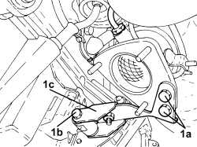
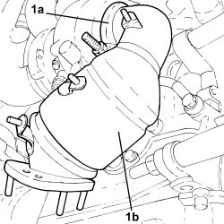
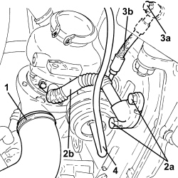
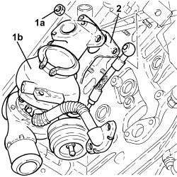
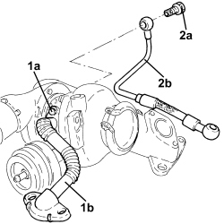
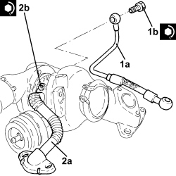
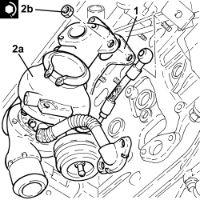
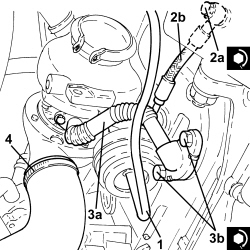
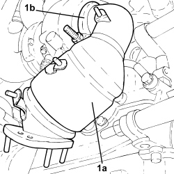

1064A27 TURBOCHARGER UNIT AND EXHAUST MANIFOLD - R.R.
- Path
- Procedures > 10 ENGINE > 1064 ENGINE SUPERCHARGING SYSTEM > 1064A TURBOCHARGER ASSEMBLY > 1064A27 TURBOCHARGER UNIT AND EXHAUST MANIFOLD - R.R.
- Kind
- repair procedure (removal / refitting; the operation number is the code)
- Applies to
- engines: 1.9 JTD 8V, 1.9 JTD 16V; all production periods
- Interactive page
- https://sloeber94.github.io/elrnDB/alfa/159/en/#/939010579
Applies to: engines: 1.9 JTD 8V, 1.9 JTD 16V; all production periods
 Removing
Removing
 Refitting
Refitting- Position the vehicle on a lift.
Op. 1084A16 OIL DIPSTICK PIPE - R.R
Op. 1048A50 TURBOCHARGER AIR INTAKE PIPE - R.R.
Op. 1088D14 UPPER RADIATOR COOLANT OUTLET HOSE - R.R.
Op. 1088D10 LOWER RADIATOR COOLANT OUTLET HOSE - R.R.
Op. 1072C44 EXHAUST MANIFOLD HEAT SHIELD - R+R
Op. 7055B54 UNDER ENGINE PROTECTION/GUARD - R.R.
Op. 1076B72 INTERMEDIATE EXHAUST PIPE WITH HOSE SECTION - R+R
Op. 1080B64 CATALYTIC CONVERTER EXCESS TEMPERATURE THERMOCOUPLE - R + R
1. Undo bolts (1a), (1b) and remove the catalytic converter bracket (1c).

Applies to: engines: 1.9 JTD 8V, 1.9 JTD 16V; all production periods
1. Loosen collar (1a) and remove catalytic preconverter (1b).

Applies to: engines: 1.9 JTD 8V, 1.9 JTD 16V; all production periods
1. Loosen the collar and disconnect the air delivery sleeve between the turbocharger and the heat exchanger, turbocharger side.
2. Undo the bolts (2a) securing the engine oil return pipe from the turbocharger (2b), crankcase sump side.
3. Undo the connector (3a) securing the engine oil delivery pipe to the turbocharger (3b), crankcase side.
4. Disconnect the vacuum pipe from the variable geometry actuator.

Applies to: engines: 1.9 JTD 8V, 1.9 JTD 16V; all production periods
1. Unscrew bolts (1a), loosen the band (1a) and remove the E.G.R. system water/exhaust gas heat exchanger inlet pipe (1c).
2. Remove the seals.

Applies to: engines: 1.9 JTD 8V, 1.9 JTD 16V; all production periods
1. Undo the nuts (1a) and remove the turbocharger (1b).
2. Remove the seal.

Applies to: engines: 1.9 JTD 8V, 1.9 JTD 16V; all production periods
1. Working at the bench, undo the bolts (1a) and remove the turbocharger engine oil return pipe (1b).
- Remove the seals.
2. Undo the connectors (2a) and remove the engine oil supply pipe to the turbocharger (2b).

Applies to: engines: 1.9 JTD 8V, 1.9 JTD 16V; all production periods
Refitting
Removing1. Position the pipe carrying engine oil to the turbocharger (1a) in its housing and secure it tightening connectors (1b) to the recommended torque.
Component | Fastening | dia | Value (daNm) | Validity |
|---|---|---|---|---|
Engine oil supply pipe to turbocharger | Connector | M10 | (turbocharger side) 1.5 | 1.9 JTD 8V 1.9 JTD 16V 2.4 JTD 20V |
2. Position the engine oil return pipe from the turbocharger (2a) in its housing complete with gaskets and secure it by tightening bolts (2b) to the specified torque.
Component | Fastening | dia | Value (daNm) | Validity |
|---|---|---|---|---|
Engine oil supply pipe from turbocharger | Bolt | M8 | (turbocharger side) 2.3 - 2.8 | 1.9 JTD 8V 1.9 JTD 16V |

Applies to: engines: 1.9 JTD 8V, 1.9 JTD 16V; all production periods
1. Place the gasket back in its housing.
2. Place turbocharger assembly (2a) in its housing and secure it by tightening the bolts (2b) to the recommended torque.
Component | Fastening | dia | Value (daNm) | Validity |
|---|---|---|---|---|
Turbocharger and exhaust manifold assembly | Nut | M8 | (cylinder head side) 1.8 - 2.2 | 1.9 JTD 16V |

Applies to: engines: 1.9 JTD 8V, 1.9 JTD 16V; all production periods
1. Refit the E.G.R. system water/exhaust gas heat exchanger inlet pipe (1a) with gaskets (1b), then secure with the collar and tighten bolts (1d) to the specified torque.
Component | Fastening | dia | Value (daNm) | Validity |
|---|---|---|---|---|
Exhaust gas/water heat exchanger for E.G.R. system | Bolt | M8 | (exhaust manifold side) 2.3 - 2.8 | 1.9 JTD 8V 1.9 JTD 16V 2.4 JTD 20V |

Applies to: engines: 1.9 JTD 8V, 1.9 JTD 16V; all production periods
1. Connect the vacuum pipe to the variable geometry actuator.
2. Tighten the connector (2a) securing the engine oil delivery pipe to the turbocharger (2b), crankcase side.
Component | Fastening | dia | Value (daNm) | Validity |
|---|---|---|---|---|
Engine oil supply pipe to turbocharger | Connector | M12 | (engine block side) 2.2 - 2.7 | 1.9 JTD 16V |
3. Tighten the bolts (3a) securing the engine oil return pipe from the turbocharger (3b), crankcase side, to the specified torque.
Component | Fastening | dia | Value (daNm) | Validity |
|---|---|---|---|---|
Engine oil supply pipe from turbocharger | Bolt | M8 | (engine block side) 2.2 - 2.7 | 1.9 JTD 8V 1.9 JTD 16V |
4. Connect the air delivery sleeve between the turbocharger and the heat exchanger, turbocharger side, and tighten the collar.

Applies to: engines: 1.9 JTD 8V, 1.9 JTD 16V; all production periods
1. Place the catalytic converter (1a) in its housing and secure it using the collar (1b).

Applies to: engines: 1.9 JTD 8V, 1.9 JTD 16V; all production periods
- Place the catalytic converter bracket in its housing and secure it using the bolts.
Op. 1080B64 CATALYTIC CONVERTER EXCESS TEMPERATURE THERMOCOUPLE - R + R
Op. 1076B72 INTERMEDIATE EXHAUST PIPE WITH HOSE SECTION - R+R
Op. 7055B54 UNDER ENGINE PROTECTION/GUARD - R.R.
Op. 1072C44 EXHAUST MANIFOLD HEAT SHIELD - R+R
Op. 1088D10 LOWER RADIATOR COOLANT OUTLET HOSE - R.R.
Op. 1088D14 UPPER RADIATOR COOLANT OUTLET HOSE - R.R.
Op. 1048A50 TURBOCHARGER AIR INTAKE PIPE - R.R.
Op. 1084A16 OIL DIPSTICK PIPE - R.R
- Remove the vehicle from the lift.
Topics linked from this page (8)
- 1048A50 TURBOCHARGER AIR INTAKE PIPE - R.R.
- 1072C44 EXHAUST MANIFOLD HEAT SHIELD - R+R
- 1076B72 INTERMEDIATE EXHAUST PIPE WITH HOSE SECTION - R+R
- 1080B64 CATALYTIC CONVERTER EXCESS TEMPERATURE THERMOCOUPLE - R + R
- 1084A16 OIL DIPSTICK PIPE - R.R
- 1088D10 LOWER RADIATOR COOLANT OUTLET HOSE - R.R.
- 1088D14 UPPER RADIATOR COOLANT OUTLET HOSE - R.R.
- 7055B54 UNDER ENGINE PROTECTION/GUARD - R.R.